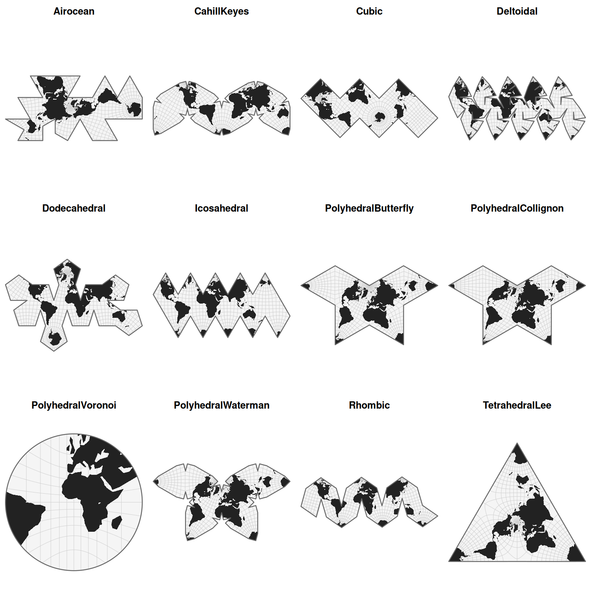

Returns the list of available map projections registered in planisphere. Projections are organized into thematic families to facilitate exploration and selection.
By default, all projections are returned as a single sorted character vector. Alternatively, a specific family of projections can be requested.
Value
A sorted unique character vector of projection names. If `type` is provided, only projections belonging to the selected family are returned.
Examples
# List all available projections
# List cylindrical projections
registry(type = "cylindrical")
#> [1] "CylindricalEqualArea" "CylindricalStereographic"
#> [3] "Equirectangular" "Mercator"
#> [5] "Miller" "TransverseMercator"
# Explore regional projections
registry("regional")
#> [1] "ChamberlinAfrica" "ModifiedStereographicAlaska"
#> [3] "ModifiedStereographicGs48" "ModifiedStereographicGs50"
#> [5] "ModifiedStereographicLee" "ModifiedStereographicMiller"
#> [7] "Patterson" "Robinson"
#> [9] "TwoPointAzimuthalUsa" "TwoPointEquidistantUsa"
#> [11] "Winkel3"
# Visualize polyhedral projections
gallery(projections = registry("polyhedral"), verbose = FALSE)
